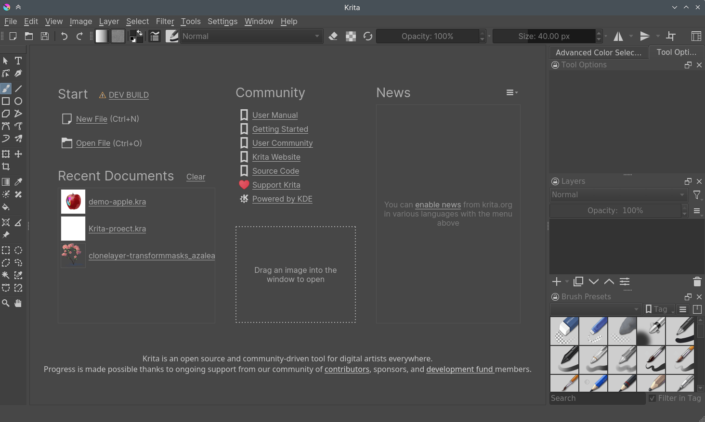
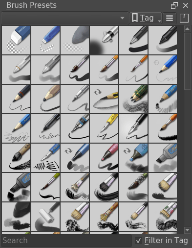

啟動 Krita¶
When you start Krita for the first time there will be no canvas or new document open by default. You will be greeted by a welcome screen, which will have option to create a new file or open existing document. To create a new canvas you have to create a new document from the File menu or by clicking on New File under start section of the welcome screen. This will open the new file dialog box. If you want to open an existing image, either use or drag the image from your computer into Krita's window.
{kind=link}
建立一個新文件¶
A new document can be created as follows.
Click on File from the application menu at the top.
Then click on New. Or you can do this by pressing the Ctrl + N shortcut.
Now you will get a New Document dialog box as shown below:

Click on the Custom Document section and in the Dimensions tab choose A4 (300ppi) or any size that you prefer from the Predefined drop down. To know more about the other sections such as create document from clipboard and templates see 建立新文件.
Make sure that the color profile is RGB and depth is set to 8-bit integer/channel in the color section. For advanced information about the color and color management refer to 色彩.
如何使用筆刷¶
Now, on the blank white canvas, just left click with your mouse or draw with the pen on a graphic tablet. If everything's correct, you should be able to draw on the canvas! The brush tool should be selected by default when you start Krita, but if for some reason it is not, you can click on this  icon from the toolbox and activate the brush tool.
icon from the toolbox and activate the brush tool.
Of course, you'd want to use different brushes. On your right, there's a docker named Brush Presets (or on top, press the F6 key to find this one) with all these cute squares with pens and crayons.
If you want to tweak the presets, check the Brush Editor in the toolbar. You can also access the Brush Editor with the F5 key.
Tick any of the squares to choose a brush, and then draw on the canvas. To change color, click the triangle in the Advanced Color Selector docker.
擦除筆跡¶
There are brush presets for erasing, but it is often faster to use the eraser toggle. By toggling the E key, your current brush switches between erasing and painting. This erasing method works with most of the tools. You can erase using the line tool, rectangle tool, and even the gradient tool.
儲存與開啟檔案¶
Now, once you have figured out how to draw something in Krita, you may want to save it. The save option is in the same place as it is in all other computer programs: the top-menu of File, and then Save. Select the folder you want to have your drawing, and select the file format you want to use (.kra is Krita's default format, and will save everything). And then hit Save. Some older versions of Krita have a bug and require you to manually type the extension.
If you want to show off your image on the internet, check out the 轉存成通用的網路傳播格式 tutorial.
Check out 介面導航 for further basic information, 基本概念 for an introduction as Krita as a medium, or just go out and explore Krita!